Tính năng của rig đã tạo¶
Sau khi tạo human rig, một armature mới có tên rig sẽ được thêm vào scene của bạn. Đây là character rig mà bạn đã tạo từ human meta-rig và sẽ chứa tất cả các tính năng.
Tính năng chung¶
Các panel UI của rig¶

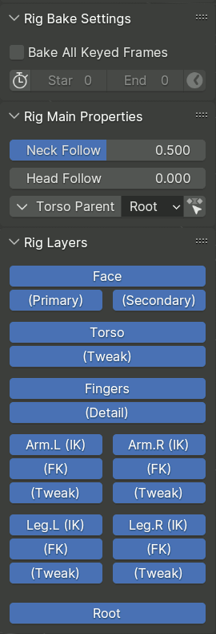
Rig đã tạo được đi kèm một script cài đặt một bộ panel xuất hiện trong tab Item của thanh bên của 3D View khi một bone thuộc rig đã tạo đang ở trạng thái active.
Rig Bake Settings¶
Panel này được hiển thị nếu armature có một Action đang active, và được dùng bởi các operator áp dụng một thao tác lên nhiều keyframe.
- Bake All Keyed Frames
Khi được bật, operator sẽ tính toán và tạo keyframe cho kết quả của nó trên mọi frame có key của bất kỳ bone nào, thay vì chỉ những frame liên quan.
- Limit Frame Range
Khi được bật, operator bị giới hạn trong một khoảng frame nhất định.
- Start, End
Chỉ định khoảng frame cần xử lý.
- Get Frame Range
Thiết lập khoảng frame bake từ khoảng frame của scene.
Rig Main Properties¶
Panel này hiển thị các property và operator liên quan đến các bone được chọn.
Rig Layers¶
Panel này chứa các nút để bật/tắt khả năng hiển thị của bone collection.
Bố cục và nhãn của các nút được định nghĩa trong panel Bone Collection UI của metarig.
Các control chung¶
Các rig của Rigify được xây dựng từ những thành phần chuẩn hóa gọi là sub-rig, được liên kết với nhau theo hệ thống phân cấp parent-child. Mặc dù hành vi chính xác của từng sub-rig do cách cài đặt của nó quyết định, vẫn có một số quy ước chung được nhiều sub-rig tuân theo.
Bone root¶
Mỗi rig của Rigify đều có một bone tên là root, đóng vai trò là parent của tất cả các bone trong rig. Bone này được gán vào một bone collection tên Root. Trừ khi metarig có một bone tùy chỉnh cùng tên, bone này được đặt tại gốc tọa độ của rig object. Widget của nó trông giống một hình tròn với bốn mũi tên nhô ra.

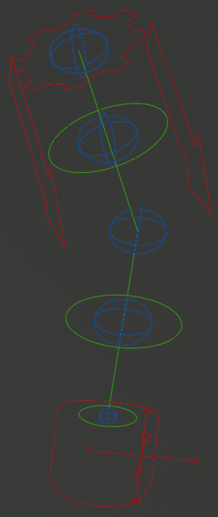
Limb Master¶
Nhiều sub-rig dạng chi có một bone hình bánh răng ở phần gốc của chúng.
Bone này trong một số trường hợp có thể được dùng để biến đổi toàn bộ sub-rig như một khối cứng, đồng thời còn là nơi chứa các custom property hiển thị trong panel Rig Main Properties. Nếu bạn đang tìm trong Graph Editor các giá trị được animate của các property này thì đây nhiều khả năng là bone cần xem.
Là một ngoại lệ, nếu nhiều control của sub-rig cần từng bản sao riêng của về cơ bản là cùng một property, property đó có thể được đặt trực tiếp trên chính các control này.
Các tweak control¶
Các control này trông giống những hình cầu màu xanh dương trong bảng màu mặc định, và là lớp điều khiển cuối cùng nằm trên chính các bone biến dạng.
Tweak phục tùng vị trí chung của chi theo IK hoặc FK, nhưng có thể được kéo ra riêng, xoay twist và scale tự do, thậm chí tạo ra những dáng chi gần như không thể có.
- Rubber Tweak
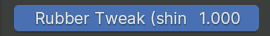
Một số sub-rig cung cấp một slider trong Rig Main Properties khi các tweak được chọn, để điều khiển độ mượt của khớp Bendy Bone tại vị trí đó. Khi bằng 0, khớp biến dạng với một nếp gấp gắt; còn khi đặt bằng 1, sự chuyển tiếp trở nên mượt mà, tạo nên vẻ ngoài hoạt hình như ống cao su.

Các custom pivot¶
Một số bone có thể di chuyển tự do trong không gian (như các IK control) có thể tùy chọn đi kèm một custom pivot control. Các control này thường trông giống một empty trục tọa độ đơn giản với các đường trục được đầu bằng hình vuông hoặc dấu cộng, giống như trong hình trên. Control có thể được di chuyển tự do để thay đổi vị trí của pivot, sau đó được xoay hoặc scale để biến đổi bone mục tiêu quanh pivot.
Chuyển đổi giữa IK và FK¶

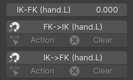
Một số loại rig cung cấp cả control IK lẫn control FK (màu đỏ cho IK và màu xanh lá cho FK trong hình trên), kèm khả năng chuyển đổi và snap giữa chúng.
Việc chuyển đổi được điều khiển bằng một slider trong Rig Main Properties, thường nội suy giữa hoàn toàn IK tại 0 và hoàn toàn FK tại 1.
Việc snap một loại control sang hình dạng của loại kia được thực hiện qua các nút, mà khi đủ bộ sẽ tạo thành nhóm gồm ba nút:
Nút chính sẽ snap trên frame hiện tại, và tự tạo key cho kết quả nếu auto-key được bật.
Nút Action sẽ bake thay đổi trên nhiều keyframe, theo thiết lập trong Rig Bake Settings.
Nút Clear sẽ xóa các keyframe trên các control tương ứng trong khoảng bake.
Chuyển đổi parent¶

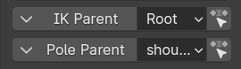
Một số control di chuyển tự do, ví dụ thường là các IK control, có thể có cơ chế để chuyển đổi parent bone của chúng giữa một tập lựa chọn, bao gồm root bone hoặc không chọn gì cả.
Cơ chế này được hiển thị trong panel Rig Main Properties qua một hàng gồm ba control:
Một nút mở ra menu thả xuống, cho phép chuyển đổi parent trên frame hiện tại mà vẫn giữ nguyên vị trí và hướng của bone trong không gian world.
Một ô nhập thả xuống bộc lộ trực tiếp property chuyển đổi để tạo keyframe và thao tác trực tiếp. Việc thay đổi giá trị có thể khiến vị trí của bone bị nhảy.
Một nút áp dụng việc chuyển đổi parent có giữ vị trí trên khoảng bake của các keyframe.
Ghi chú
Khi tự tay đặt một constraint Child Of lên bone control, parent tích hợp sẵn nên được chuyển sang none.
Limbs¶
Limbs có một master bone và các tweak. Tùy thuộc vào các tùy chọn meta-rig do người dùng định nghĩa, nhiều đoạn bone biến dạng kèm tweak sẽ được tạo.
IK control có thể có một custom pivot tùy chọn, cùng với các pivot định nghĩa sẵn bổ sung.
Limbs của Rigify có các control sau trong panel Sidebar:

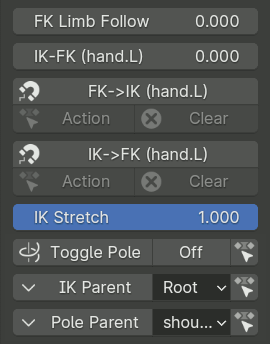
- FK Limb Follow Slider
Khi đặt bằng 1, chi FK sẽ không xoay cùng torso mà thay vào đó giữ nguyên độ xoay tương đối của nó so với root bone.
- IK-FK Slider
Điều khiển việc chi theo control IK hay FK, nội suy giữa hoàn toàn IK tại 0 và hoàn toàn FK tại 1.
- IK<->FK Snapping Buttons
Snap một loại control sang loại kia.
- IK Stretch Slider
Nội suy giữa việc chi được duỗi tự do tại 1, hoặc bị giới hạn ở chiều dài tối đa tại 0.
- Toggle Pole Switch
Khi công tắc ở trạng thái Off, chi IK sẽ dùng pole vector xoay (mũi tên ở phần gốc chi). Việc xoay/di chuyển/scale mũi tên sẽ điều khiển phần gốc của chi IK.
Khi công tắc ở trạng thái On, pole vector cổ điển sẽ được hiển thị và dùng để định hướng chi IK. Mũi tên vẫn tiếp tục điều khiển scale và vị trí của phần gốc chi IK.
Tương tự như Parent Switching, hàng này gồm các nút để chuyển đổi pose hiện tại giữa hai kiểu, hoặc bake toàn bộ action.
- IK Parent Switch
Chuyển đổi parent thực tế của IK control chính.
- Pole Parent Switch
Chuyển đổi parent thực tế của control IK Pole cổ điển.
Arms¶

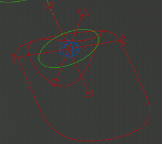
Arms có cấu trúc control đơn giản nhất: các IK control gồm có IK control chính, custom pivot control (tùy chọn), và wrist control (hình tròn cong, tùy chọn) — wrist control này xoay quanh đuôi thay vì quanh đầu của bone bàn tay.
Không có control bổ sung nào trong panel Rig Main Properties.
Legs¶
Legs có thiết lập phức tạp hơn, bao gồm:

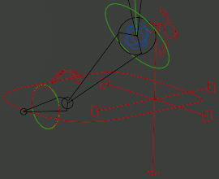
- IK & FK Toe Optional
Hai control IK và FK riêng biệt cho ngón chân (tính năng này được bật mặc định trong các metarig đi kèm, và được khuyến nghị để snap IK<->FK ổn định).
- IK Heel
Một control gót chân có thể được xoay để điều khiển việc lăn về phía trước hoặc phía sau, nghiêng sang hai bên, hoặc yaw của gót chân.
- Toe Pivot Optional
Một pivot control bổ sung xoay quanh gốc ngón chân.
- Custom Pivot Optional
Một custom pivot control.
Panel property có thêm hai tính năng:

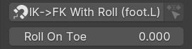
- IK->FK Snap With Roll Buttons
Việc snap IK sang FK theo chuẩn sẽ đặt lại các phép biến đổi của mọi IK control ngoại trừ control chính. Cách này không tiện dùng trong animation có sử dụng control gót chân, vì roll và rock sẽ bị gộp vào phép biến đổi của control chính.
Operator snap thay thế này cố gắng suy ra độ xoay của control gót chân sao cho IK control chính song song với mặt phẳng sàn được suy ra từ hướng hiện tại của IK control. Operator có các tùy chọn để chỉ định những trục xoay nào được dùng cho độ xoay của control gót chân.
- Roll On Toe Slider Optional
Nếu được bật trong cài đặt sub-rig, slider này có thể dùng để điều khiển việc độ xoay gót chân (không tính roll về phía sau) được áp dụng ở gốc hay ở đầu ngón chân.
Ngón tay & Xúc tu¶
Simple Tentacle¶
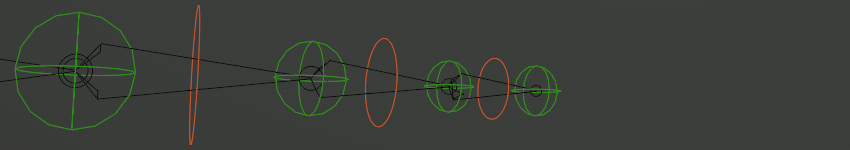
Loại rig đơn giản nhất cho ngón tay hay phần phụ nói chung là sub-rig simple tentacle. Nó chỉ có các control FK và tweak cơ bản, với tính năng tự động duy nhất là khả năng sao chép một số trục của độ xoay cục bộ từ control FK này sang control kế tiếp.
Ngón tay nâng cao¶
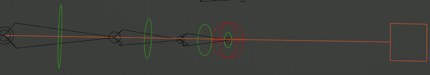
Riêng cho ngón tay, Rigify có một loại sub-rig chuyên dụng là finger, cung cấp:
- Master
Một master control (màu cam), có thể dùng để xoay cả ngón tay như một khối, cũng như uốn cong nó bằng cách scale theo trục Y.
- FK Chain
Chuỗi control FK (màu xanh lá) còn có thể hoạt động như semi-tweak nhờ cho phép di chuyển.
- IK Control Optional
IK control cho đầu ngón tay (màu đỏ).
Ghi chú
IK trong sub-rig này rất cơ bản và hoạt động như một hiệu chỉnh cho FK. Cách dùng dự kiến là tạo dáng ngón tay bằng FK, sau đó dùng snap IK->FK rồi bật IK nếu cần ghim đầu ngón tay vào chỗ.
Panel property có các tính năng sau:

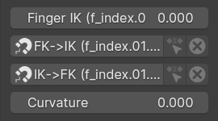
- Finger IK Slider Optional
Slider điều khiển mức ảnh hưởng của IK.
- FK<->IK Snapping Buttons Optional
Snap IK control về cuối ngón tay, hoặc điều chỉnh các control FK theo kết quả của hiệu chỉnh IK.
- Curvature Slider
Có tác dụng giống Rubber Tweak trên limbs, điều khiển hiệu ứng hoạt hình kiểu ống cao su.
Spline Tentacle¶
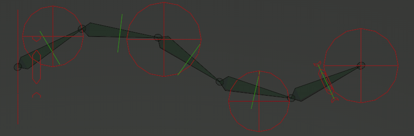
Spline Tentacle (Stretch To Fit, Manual Squash & Stretch)¶
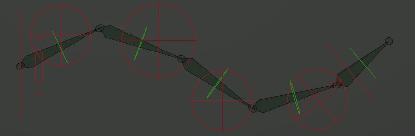
Spline Tentacle (Direct Tip Control)¶
spline tentacle là một loại rig nâng cao cho phần phụ dẻo dai (xúc tu), dựa trên constraint Spline IK. Các bone control IK quản lý các điểm điều khiển của một đường cong spline Bezier, và chuỗi IK sẽ bám theo đường cong đó.
Xúc tu có thể được tạo theo ba chế độ chính:
- Stretch To Fit
Ở chế độ đơn giản nhất này, mọi bone của chuỗi biến dạng sub-rig đều bám theo đường cong và squash & stretch để khớp với chiều dài của nó.
- Manual Squash & Stretch
Chế độ này gần như giống vậy, nhưng chuỗi bone không tự động scale để khớp chiều dài đường cong. Thay vào đó, nó cố phủ càng nhiều đường cong càng tốt với chiều dài đã được scale thủ công. Nếu đường cong quá ngắn, chuỗi bone sẽ bị vượt ra ngoài và duỗi thẳng, nhưng điều này có thể gây rung.
- Direct Tip Control
Chế độ này gần với hành vi của chi IK hơn: bone cuối của chuỗi được điều khiển trực tiếp bởi tip IK control, trong khi các bone khác của chuỗi duỗi ra và bám theo đường cong để lấp khoảng trống.
Sub-rig xúc tu có các bone control sau:
- Master
Xúc tu có cùng master control hình bánh răng như các limb khác (thể hiện dưới dạng một đường trong các hình minh họa).
- IK Start
IK control ở phần gốc xúc tu, có thể dùng để điều khiển twist ở gốc và scale theo phương ngang, đồng thời là một trong những parent có thể chuyển đổi cho các IK control khác.
Ở chế độ Manual Squash & Stretch, nó điều khiển scale đồng nhất của xúc tu theo mọi phương.
- IK Start (Extra) Optional
Các control phần gốc bổ sung, tùy chọn và ẩn theo mặc định. Parent có thể chuyển đổi mặc định là control IK Start. Scale của control này có thể tùy chọn ảnh hưởng đến độ dày của chuỗi bone thông qua bán kính của điểm trên đường cong.
- IK Middle
Các control cho phần giữa đường cong. Parent có thể chuyển đổi mặc định là Master, nhưng có thể đặt thành control IK Start hoặc IK End. Scale của control này có thể tùy chọn ảnh hưởng đến độ dày của chuỗi bone thông qua bán kính của điểm trên đường cong.
- IK End (Extra) Optional
Các control phần cuối bổ sung, tùy chọn và ẩn theo mặc định. Parent có thể chuyển đổi mặc định là control IK End. Scale của control này có thể tùy chọn ảnh hưởng đến độ dày của chuỗi bone thông qua bán kính của điểm trên đường cong.
Chế độ Direct Tip Control thêm một control phần cuối bổ sung nữa nằm cạnh các control giữa và không thể bị ẩn.
- IK End
Điều khiển điểm điều khiển cuối cùng của đường cong, và là một trong những parent tiềm năng cho các control khác của chuỗi.
Ở chế độ Direct Tip Control còn điều khiển trực tiếp bone cuối cùng của chuỗi.
- IK End Twist Optional
Control này được gắn về mặt hiển thị vào bone cuối cùng của chuỗi, và phải dùng phép xoay Euler.
Stretch To Fit: nó điều khiển twist ở đầu xúc tu, được nội suy về không ở phần gốc.
Manual Squash & Stretch: nó còn điều khiển scale ở đầu xúc tu.
Direct Tip Control: control này không tồn tại.
- FK Chain Optional
Nếu được bật, rig sẽ có một chuỗi control hoàn toàn FK thay thế.
Panel property có các tính năng sau:

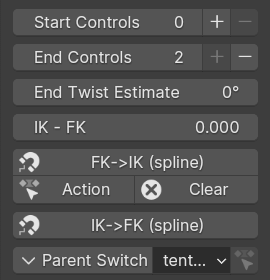
- Start/End Controls Optional
Nếu tồn tại các control bổ sung, property này điều khiển bao nhiêu trong số chúng hiển thị và active.
Khi một control bị tắt, nó sẽ bị snap đến một vị trí cực kỳ gần điểm điều khiển phần cuối tương ứng, qua đó vô hiệu hóa trên thực tế tác động của nó. Vì vậy, thay đổi cài đặt này trong một animation có thể gây nhảy.
Các nút cộng và trừ có thể giúp duy trì sự chuyển tiếp liền mạch trong animation bằng cách tạo keyframe cho sự thay đổi giá trị của property với nội suy Constant, đồng thời snap và tạo keyframe cho chính control đó về vị trí 'ẩn' của nó.
- End Twist Estimate Optional
Ở chế độ Direct Tip Control, twist ở cuối xúc tu được suy ra từ hướng tự do của tip control, thay vì dùng một twist control riêng với phép xoay Euler bị ràng buộc. Tuy nhiên, vì lý do kỹ thuật, cách này chỉ có thể cho các giá trị trong phạm vi 180 độ quanh vị trí trung tính.
Một xúc tu dài có thể chấp nhận twist nhiều hơn 180 độ, nên cần một giải pháp thay thế. Property này cho phép chỉ định một ước lượng xấp xỉ của giá trị twist (thực chất là dịch chuyển vị trí trung tính), và rig sẽ áp dụng hiệu chỉnh tự động trong phạm vi 180 độ quanh giá trị này.
- IK-FK, IK<->FK Snapping Optional
Nếu các control FK được bật, những tính năng này cung cấp việc chuyển đổi và snap IK-FK tiêu chuẩn.
Tuy nhiên, khác với các limb khác, ở rig này việc snap IK sang FK tự động chỉ mang tính xấp xỉ và cần chỉnh thủ công. Vì lý do đó, không có các nút để bake việc snap trên một khoảng keyframe.
- Parent Switch
Chuyển đổi parent của IK control đang được chọn.
Spine, Head & Tail¶

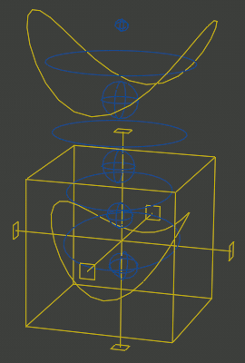
Spine¶
Sub-rig spine cung cấp một torso control hình khối lập phương với parent có thể chuyển đổi, cùng các control hip và chest hình tròn cong nằm dưới quyền của nó. Các tweak control được cung cấp cho việc biến dạng ở mức thấp.
Torso control có thể tùy chọn đi kèm một custom pivot control. Rig cũng có thể tùy chọn cung cấp một bộ đầy đủ các control FK nằm dưới các control đơn giản hóa thông thường, nhưng trên các tweak.
Panel property của rig cho các control spine thường cũng bao gồm các tùy chọn cho head và/hoặc tail.

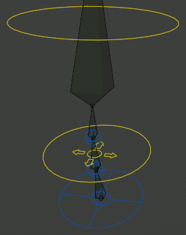
Head¶
Sub-rig head gắn vào phần cuối của spine, cung cấp các control xoay cho đầu và cổ, cũng như các tweak để điều khiển cổ một cách tinh chỉnh.
Nếu cổ dài từ ba bone trở lên, một control uốn cổ kiểu di chuyển giống tweak sẽ được cung cấp thêm (widget trông giống một hình tròn với các mũi tên).
Panel property chứa các tùy chọn sau:
- Neck Follow Slider
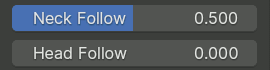
Slider này điều khiển mức cô lập độ xoay cho các bone cổ. Cổ sẽ theo hướng của Torso khi đặt bằng 0, và theo Chest khi đặt bằng 1.
- Head Follow Slider
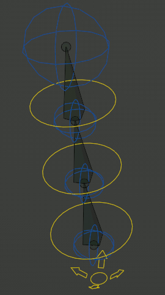
Slider này điều khiển mức cô lập độ xoay cho đầu. Đầu sẽ theo hướng của Torso khi đặt bằng 0, và theo Chest khi đặt bằng 1.


Tail¶
Sub-rig tail gắn vào phần đầu của spine, cung cấp các control FK cho đuôi, cũng như một master control nhân bản độ xoay cục bộ của nó theo một số trục nhất định lên tất cả từng bone.
Panel property chứa các tùy chọn sau:
- Tail Follow Slider
Slider này điều khiển mức cô lập độ xoay cho đuôi. Đuôi sẽ theo hướng của Torso khi đặt bằng 0, và theo Hips khi đặt bằng 1.
Face¶
Ghi chú
Phần này mô tả kiểu khuôn mặt module mới được tạo ra bằng nút operator Upgrade Face.
Khái niệm cơ bản¶
Skin Bone Chains¶

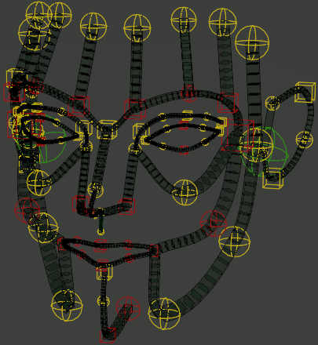
Nền tảng của khuôn mặt Rigify là một mạng lưới các chains Bendy Bone với control đặt tại mỗi đầu bone. Các control này ảnh hưởng đến mọi bone gặp nhau tại điểm cụ thể đó.
Khi các control chỉ bị di chuyển, các chuỗi B-Bone giữ nguyên hành vi handle bezier tự động thông thường. Độ xoay cục bộ và/hoặc scale của các control được áp dụng chồng lên trên đó.
Với certain chains, phép biến đổi của các control phần cuối và/hoặc phần giữa được nội suy tới các control khác nằm giữa chúng. Trong những trường hợp như vậy, các control thường có màu và/hoặc hình dạng khác nhau.
Ngoài ra, một số control có arbitrary constraints sao chép một phần phép biến đổi từ các điểm điều khiển lân cận.
Các controller chuyên biệt¶
Một số vùng trên khuôn mặt, như mắt hoặc miệng, có thêm các controller chuyên biệt áp dụng hành vi tùy chỉnh chồng lên các chuỗi và controller của chúng trong vùng liên quan.
Eyes¶

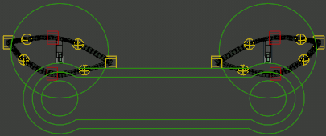
eyes có các control sau ngoài các chuỗi mí mắt:
- Master
Control hình tròn lớn này có thể dùng để biến đổi cả con mắt như một khối.
- Common Target
Control lớn bao quanh tất cả các target mắt riêng biệt này có parent có thể chuyển đổi và có thể dùng để chỉ định điểm mà mắt nên hướng nhìn vào.
- Eye Target
Các control hình tròn nhỏ nằm trong control target chung này chỉ định điểm mà từng mắt nhắm tới. Scale cục bộ của chúng cũng có thể dùng để tác động lên mống mắt hoặc con ngươi của mắt, tùy vào cách mắt được weight paint.
Panel property của rig chứa các tùy chọn sau:

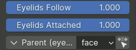
- Eyelids Follow Slider
Điều khiển mức độ độ xoay của nhãn cầu ảnh hưởng đến mí mắt. Tùy thuộc vào các tùy chọn tạo sub-rig, slider này có thể được tách để điều khiển riêng phương ngang và phương dọc.
- Eyelids Attached Slider Optional
Nếu được bật trong các tùy chọn tạo sub-rig, slider này có thể dùng để tắt cơ chế buộc mí mắt bám theo hình cầu của mắt.
- Parent Parent Switch
Chọn parent cho control target chung.
Mouth¶

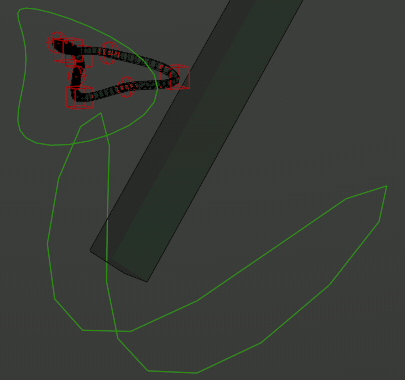
mouth có các control sau:
- Jaw Master
Điều khiển độ xoay của hàm, ảnh hưởng trực tiếp đến bone biến dạng hàm chính, cũng như các chuỗi hoàn toàn thuộc về hàm. Các chuỗi tạo thành vòng môi được điều chỉnh để mở miệng khi hàm xoay hoặc di chuyển.
- Mouth Master
Control này biến đổi đồng nhất các môi mà không di chuyển hàm.
Panel property của rig chứa các tùy chọn sau:

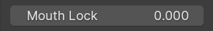
- Mouth Lock Slider
Slider này có thể được thay đổi từ 0 đến 1 để ngăn miệng mở ra khi hàm xoay hoặc di chuyển.